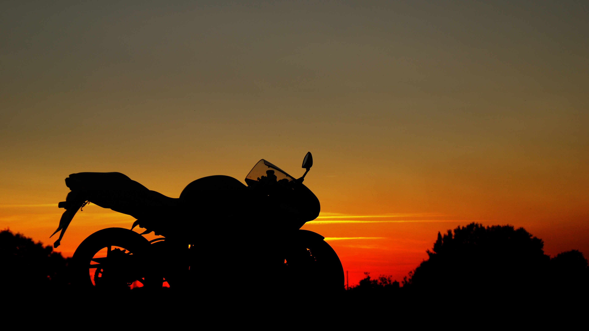

Мое хобби - мотоциклы!

Самая главная причина, почему я люблю байки — удовольствие. Владельцы байков искренне любят то, чем занимаются, поэтому они каждый год ждут начала сезона, а то и не заканчивают его вовсе. Удовольствие, которое человек получает от управления мотоциклом, заставляет пилота совершенствовать навыки, работать над собой. Удовольствие от открытий и путешествий, заставляет его планировать все новые и новые маршруты, делиться находками. Удовольствие самореализации в мотоспорте или мотокультуре, радость общения с единомышленниками — все это стоит того, чтобы влиться в жизнь на двух колесах.